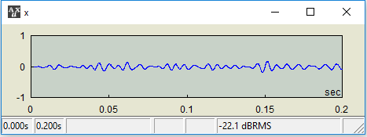
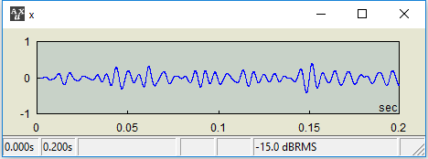

| x @= y |
Compound operator for the level operator @
| Equivalent expression |
| x = x @ y |
| Commutative | |
|---|---|
| No |
| Data Types |
|---|
| x | y |
|---|---|
| AUD | SCAL |
| Notes |
|---|
|
| Examples |
|---|
| Bandpass filter the white noise x |
| AUX> x=noise(100).bpf(100,200);  |
| The RMS level of x, -22.1 dB, as seen in the plot, is simply a byproduct of filtering. To set it specifically at -15 dB, do the following: |
| AUX> x @= -15  |